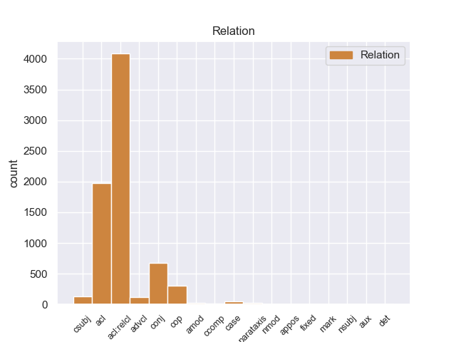
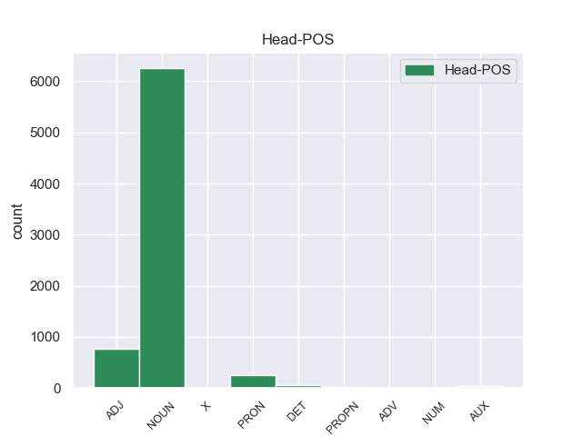
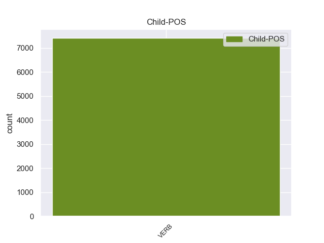

Distribution of features within this leaf



Agreement Rules sorted by frequency.
When the head token is NOUN and the dependent token is VERB.
1 Esta _ _ _ _ 0 _ _ _
2 compra _ _ _ _ 0 _ _ _
3 pone _ _ _ _ 0 _ _ _
4 fin _ _ _ _ 0 _ _ _
5 a _ _ _ _ 0 _ _ _
6 meses _ _ _ _ 0 _ _ _
7 de _ _ _ _ 0 _ _ _
8 negociaciones _ _ _ _ 0 _ _ _
9 y _ _ _ _ 0 _ _ _
10 refuerza _ _ _ _ 0 _ _ _
11 la _ _ _ _ 0 _ _ _
12 estrategia estrategia NOUN _ Gender=Fem|Number=Sing 0 _ _ _
13 de _ _ _ _ 0 _ _ _
14 crecimiento _ _ _ _ 0 _ _ _
15 implantada implantado VERB _ Gender=Fem|Number=Sing|VerbForm=Part 12 acl _ _
16 por _ _ _ _ 0 _ _ _
17 la _ _ _ _ 0 _ _ _
18 dirección _ _ _ _ 0 _ _ _
19 de _ _ _ _ 0 _ _ _
20 el _ _ _ _ 0 _ _ _
21 grupo _ _ _ _ 0 _ _ _
22 además _ _ _ _ 0 _ _ _
23 de _ _ _ _ 0 _ _ _
24 añadir _ _ _ _ 0 _ _ _
25 un _ _ _ _ 0 _ _ _
26 complejo _ _ _ _ 0 _ _ _
27 de _ _ _ _ 0 _ _ _
28 calidad _ _ _ _ 0 _ _ _
29 superior _ _ _ _ 0 _ _ _
30 a _ _ _ _ 0 _ _ _
31 su _ _ _ _ 0 _ _ _
32 oferta _ _ _ _ 0 _ _ _
33 . _ _ _ _ 0 _ _ _
When the head token is NOUN and the dependent token is VERB. and the head token is ADJ and the dependent token is VERB.
1 Jazmin _ _ _ _ 0 _ _ _
2 es _ _ _ _ 0 _ _ _
3 todo _ _ _ _ 0 _ _ _
4 lo _ _ _ _ 0 _ _ _
5 contrario _ _ _ _ 0 _ _ _
6 , _ _ _ _ 0 _ _ _
7 es _ _ _ _ 0 _ _ _
8 tímida tímido ADJ _ Gender=Fem|Number=Sing 0 _ _ _
9 y _ _ _ _ 0 _ _ _
10 callada _ _ _ _ 0 _ _ _
11 , _ _ _ _ 0 _ _ _
12 pero _ _ _ _ 0 _ _ _
13 siempre _ _ _ _ 0 _ _ _
14 es _ _ _ _ 0 _ _ _
15 arrastrada arrastrado VERB _ Gender=Fem|Number=Sing|VerbForm=Part 8 conj _ _
16 por _ _ _ _ 0 _ _ _
17 las _ _ _ _ 0 _ _ _
18 locuras _ _ _ _ 0 _ _ _
19 y _ _ _ _ 0 _ _ _
20 travesuras _ _ _ _ 0 _ _ _
21 que _ _ _ _ 0 _ _ _
22 inventa _ _ _ _ 0 _ _ _
23 Alma _ _ _ _ 0 _ _ _
24 . _ _ _ _ 0 _ _ _
When the head token is NOUN and the dependent token is VERB. and the head token is ADJ and the dependent token is VERB. and the head token is PRON and the dependent token is VERB.
1 Cada _ _ _ _ 0 _ _ _
2 señal _ _ _ _ 0 _ _ _
3 que _ _ _ _ 0 _ _ _
4 el _ _ _ _ 0 _ _ _
5 caporal _ _ _ _ 0 _ _ _
6 hace _ _ _ _ 0 _ _ _
7 es _ _ _ _ 0 _ _ _
8 un _ _ _ _ 0 _ _ _
9 tipo _ _ _ _ 0 _ _ _
10 de _ _ _ _ 0 _ _ _
11 acrobacia _ _ _ _ 0 _ _ _
12 , _ _ _ _ 0 _ _ _
13 en _ _ _ _ 0 _ _ _
14 una _ _ _ _ 0 _ _ _
15 de _ _ _ _ 0 _ _ _
16 ellas _ _ _ _ 0 _ _ _
17 cada _ _ _ _ 0 _ _ _
18 danzante _ _ _ _ 0 _ _ _
19 volador _ _ _ _ 0 _ _ _
20 salta _ _ _ _ 0 _ _ _
21 a _ _ _ _ 0 _ _ _
22 el _ _ _ _ 0 _ _ _
23 vacío _ _ _ _ 0 _ _ _
24 , _ _ _ _ 0 _ _ _
25 sujetado _ _ _ _ 0 _ _ _
26 por _ _ _ _ 0 _ _ _
27 la _ _ _ _ 0 _ _ _
28 cintura _ _ _ _ 0 _ _ _
29 , _ _ _ _ 0 _ _ _
30 boca _ _ _ _ 0 _ _ _
31 abajo _ _ _ _ 0 _ _ _
32 y _ _ _ _ 0 _ _ _
33 afianzándo _ _ _ _ 0 _ _ _
34 se _ _ _ _ 0 _ _ _
35 con _ _ _ _ 0 _ _ _
36 las _ _ _ _ 0 _ _ _
37 piernas _ _ _ _ 0 _ _ _
38 y _ _ _ _ 0 _ _ _
39 gira _ _ _ _ 0 _ _ _
40 13 _ _ _ _ 0 _ _ _
41 veces _ _ _ _ 0 _ _ _
42 cada _ _ _ _ 0 _ _ _
43 uno uno PRON _ Gender=Masc|Number=Sing|PronType=Ind 0 _ _ _
44 de _ _ _ _ 0 _ _ _
45 ellos _ _ _ _ 0 _ _ _
46 , _ _ _ _ 0 _ _ _
47 que _ _ _ _ 0 _ _ _
48 multiplicado multiplicado VERB _ Gender=Masc|Number=Sing|VerbForm=Part 43 acl:relcl _ _
49 por _ _ _ _ 0 _ _ _
50 los _ _ _ _ 0 _ _ _
51 cuatro _ _ _ _ 0 _ _ _
52 voladores _ _ _ _ 0 _ _ _
53 da _ _ _ _ 0 _ _ _
54 el _ _ _ _ 0 _ _ _
55 resultado _ _ _ _ 0 _ _ _
56 de _ _ _ _ 0 _ _ _
57 52 _ _ _ _ 0 _ _ _
58 , _ _ _ _ 0 _ _ _
59 ya _ _ _ _ 0 _ _ _
60 que _ _ _ _ 0 _ _ _
61 este _ _ _ _ 0 _ _ _
62 número _ _ _ _ 0 _ _ _
63 es _ _ _ _ 0 _ _ _
64 el _ _ _ _ 0 _ _ _
65 símbolo _ _ _ _ 0 _ _ _
66 de _ _ _ _ 0 _ _ _
67 el _ _ _ _ 0 _ _ _
68 ciclo _ _ _ _ 0 _ _ _
69 de _ _ _ _ 0 _ _ _
70 52 _ _ _ _ 0 _ _ _
71 años _ _ _ _ 0 _ _ _
72 de _ _ _ _ 0 _ _ _
73 el _ _ _ _ 0 _ _ _
74 calendario _ _ _ _ 0 _ _ _
75 indígena _ _ _ _ 0 _ _ _
76 o _ _ _ _ 0 _ _ _
77 Xiuhmolpilli _ _ _ _ 0 _ _ _
78 . _ _ _ _ 0 _ _ _
When the head token is NOUN and the dependent token is VERB. and the head token is ADJ and the dependent token is VERB. and the head token is PRON and the dependent token is VERB. and the head token is DET and the dependent token is VERB.
1 ¿ _ _ _ _ 0 _ _ _
2 Ella _ _ _ _ 0 _ _ _
3 conoce _ _ _ _ 0 _ _ _
4 de _ _ _ _ 0 _ _ _
5 verdad _ _ _ _ 0 _ _ _
6 los el DET _ Definite=Def|Gender=Masc|Number=Plur|PronType=Art 0 _ _ _
7 que _ _ _ _ 0 _ _ _
8 están estar VERB _ Mood=Ind|Number=Plur|Person=3|Tense=Pres|VerbForm=Fin 6 acl:relcl _ _
9 de _ _ _ _ 0 _ _ _
10 su _ _ _ _ 0 _ _ _
11 lado _ _ _ _ 0 _ _ _
12 ? _ _ _ _ 0 _ _ _
When the head token is NOUN and the dependent token is VERB. and the head token is ADJ and the dependent token is VERB. and the head token is PRON and the dependent token is VERB. and the head token is DET and the dependent token is VERB. and the head token is AUX and the dependent token is VERB.
1 La _ _ _ _ 0 _ _ _
2 característica _ _ _ _ 0 _ _ _
3 definitoria _ _ _ _ 0 _ _ _
4 de _ _ _ _ 0 _ _ _
5 la _ _ _ _ 0 _ _ _
6 isotermia _ _ _ _ 0 _ _ _
7 es ser AUX _ Mood=Ind|Number=Sing|Person=3|Tense=Pres|VerbForm=Fin 0 _ _ _
8 que _ _ _ _ 0 _ _ _
9 la _ _ _ _ 0 _ _ _
10 variación _ _ _ _ 0 _ _ _
11 térmica _ _ _ _ 0 _ _ _
12 de _ _ _ _ 0 _ _ _
13 las _ _ _ _ 0 _ _ _
14 temperaturas _ _ _ _ 0 _ _ _
15 medias _ _ _ _ 0 _ _ _
16 de _ _ _ _ 0 _ _ _
17 todos _ _ _ _ 0 _ _ _
18 los _ _ _ _ 0 _ _ _
19 meses _ _ _ _ 0 _ _ _
20 de _ _ _ _ 0 _ _ _
21 el _ _ _ _ 0 _ _ _
22 año _ _ _ _ 0 _ _ _
23 no _ _ _ _ 0 _ _ _
24 supera superar VERB _ Mood=Ind|Number=Sing|Person=3|Tense=Pres|VerbForm=Fin 7 ccomp _ _
25 los _ _ _ _ 0 _ _ _
26 1 _ _ _ _ 0 _ _ _
27 º _ _ _ _ 0 _ _ _
28 3 _ _ _ _ 0 _ _ _
29 º _ _ _ _ 0 _ _ _
30 C. _ _ _ _ 0 _ _ _
31 Se _ _ _ _ 0 _ _ _
32 le _ _ _ _ 0 _ _ _
33 suele _ _ _ _ 0 _ _ _
34 denominar _ _ _ _ 0 _ _ _
35 " _ _ _ _ 0 _ _ _
36 la _ _ _ _ 0 _ _ _
37 eterna _ _ _ _ 0 _ _ _
38 primavera _ _ _ _ 0 _ _ _
39 " _ _ _ _ 0 _ _ _
40 . _ _ _ _ 0 _ _ _
When the head token is NOUN and the dependent token is VERB. and the head token is ADJ and the dependent token is VERB. and the head token is PRON and the dependent token is VERB. and the head token is DET and the dependent token is VERB. and the head token is AUX and the dependent token is VERB. and the head token is PROPN and the dependent token is VERB.
1 Como _ _ _ _ 0 _ _ _
2 compositor _ _ _ _ 0 _ _ _
3 , _ _ _ _ 0 _ _ _
4 en _ _ _ _ 0 _ _ _
5 1982 _ _ _ _ 0 _ _ _
6 obtuvo _ _ _ _ 0 _ _ _
7 el _ _ _ _ 0 _ _ _
8 segundo _ _ _ _ 0 _ _ _
9 premio _ _ _ _ 0 _ _ _
10 en _ _ _ _ 0 _ _ _
11 el _ _ _ _ 0 _ _ _
12 concurso _ _ _ _ 0 _ _ _
13 de _ _ _ _ 0 _ _ _
14 obras _ _ _ _ 0 _ _ _
15 orquestales _ _ _ _ 0 _ _ _
16 convocado _ _ _ _ 0 _ _ _
17 por _ _ _ _ 0 _ _ _
18 la _ _ _ _ 0 _ _ _
19 UNAM _ _ _ _ 0 _ _ _
20 y _ _ _ _ 0 _ _ _
21 , _ _ _ _ 0 _ _ _
22 en _ _ _ _ 0 _ _ _
23 1995 _ _ _ _ 0 _ _ _
24 , _ _ _ _ 0 _ _ _
25 el _ _ _ _ 0 _ _ _
26 primer _ _ _ _ 0 _ _ _
27 lugar _ _ _ _ 0 _ _ _
28 dentro _ _ _ _ 0 _ _ _
29 de _ _ _ _ 0 _ _ _
30 la _ _ _ _ 0 _ _ _
31 categoría _ _ _ _ 0 _ _ _
32 de _ _ _ _ 0 _ _ _
33 musicalización _ _ _ _ 0 _ _ _
34 de _ _ _ _ 0 _ _ _
35 textos _ _ _ _ 0 _ _ _
36 , _ _ _ _ 0 _ _ _
37 en _ _ _ _ 0 _ _ _
38 el _ _ _ _ 0 _ _ _
39 Primer _ _ _ _ 0 _ _ _
40 Certamen certamen PROPN _ Gender=Masc|Number=Sing 0 _ _ _
41 Universitario _ _ _ _ 0 _ _ _
42 Sor _ _ _ _ 0 _ _ _
43 Juana _ _ _ _ 0 _ _ _
44 Inés _ _ _ _ 0 _ _ _
45 de _ _ _ _ 0 _ _ _
46 la _ _ _ _ 0 _ _ _
47 Cruz _ _ _ _ 0 _ _ _
48 , _ _ _ _ 0 _ _ _
49 organizado organizado VERB _ Gender=Masc|Number=Sing|VerbForm=Part 40 acl _ _
50 por _ _ _ _ 0 _ _ _
51 la _ _ _ _ 0 _ _ _
52 Universidad _ _ _ _ 0 _ _ _
53 de _ _ _ _ 0 _ _ _
54 el _ _ _ _ 0 _ _ _
55 Claustro _ _ _ _ 0 _ _ _
56 de _ _ _ _ 0 _ _ _
57 Sor _ _ _ _ 0 _ _ _
58 Juana _ _ _ _ 0 _ _ _
59 . _ _ _ _ 0 _ _ _
When the head token is NOUN and the dependent token is VERB. and the head token is ADJ and the dependent token is VERB. and the head token is PRON and the dependent token is VERB. and the head token is DET and the dependent token is VERB. and the head token is AUX and the dependent token is VERB. and the head token is PROPN and the dependent token is VERB. and the head token is NUM and the dependent token is VERB.
1 Cada _ _ _ _ 0 _ _ _
2 título _ _ _ _ 0 _ _ _
3 , _ _ _ _ 0 _ _ _
4 de _ _ _ _ 0 _ _ _
5 los _ _ _ _ 0 _ _ _
6 trece trece NUM _ Number=Plur|NumType=Card 0 _ _ _
7 que _ _ _ _ 0 _ _ _
8 se _ _ _ _ 0 _ _ _
9 publicaron publicar VERB _ Mood=Ind|Number=Plur|Person=3|Tense=Past|VerbForm=Fin 6 acl:relcl _ _
10 , _ _ _ _ 0 _ _ _
11 estaba _ _ _ _ 0 _ _ _
12 dedicado _ _ _ _ 0 _ _ _
13 a _ _ _ _ 0 _ _ _
14 el _ _ _ _ 0 _ _ _
15 trabajo _ _ _ _ 0 _ _ _
16 de _ _ _ _ 0 _ _ _
17 un _ _ _ _ 0 _ _ _
18 solo _ _ _ _ 0 _ _ _
19 autor _ _ _ _ 0 _ _ _
20 y _ _ _ _ 0 _ _ _
21 supuso _ _ _ _ 0 _ _ _
22 un _ _ _ _ 0 _ _ _
23 soplo _ _ _ _ 0 _ _ _
24 de _ _ _ _ 0 _ _ _
25 aire _ _ _ _ 0 _ _ _
26 fresco _ _ _ _ 0 _ _ _
27 en _ _ _ _ 0 _ _ _
28 una _ _ _ _ 0 _ _ _
29 industria _ _ _ _ 0 _ _ _
30 editorial _ _ _ _ 0 _ _ _
31 demasiado _ _ _ _ 0 _ _ _
32 centrada _ _ _ _ 0 _ _ _
33 , _ _ _ _ 0 _ _ _
34 en _ _ _ _ 0 _ _ _
35 esa _ _ _ _ 0 _ _ _
36 época _ _ _ _ 0 _ _ _
37 , _ _ _ _ 0 _ _ _
38 en _ _ _ _ 0 _ _ _
39 el _ _ _ _ 0 _ _ _
40 cómic _ _ _ _ 0 _ _ _
41 de _ _ _ _ 0 _ _ _
42 superhéroes _ _ _ _ 0 _ _ _
43 y _ _ _ _ 0 _ _ _
44 en _ _ _ _ 0 _ _ _
45 la _ _ _ _ 0 _ _ _
46 historieta _ _ _ _ 0 _ _ _
47 francobelga _ _ _ _ 0 _ _ _
48 . _ _ _ _ 0 _ _ _
When the head token is NOUN and the dependent token is VERB. and the head token is ADJ and the dependent token is VERB. and the head token is PRON and the dependent token is VERB. and the head token is DET and the dependent token is VERB. and the head token is AUX and the dependent token is VERB. and the head token is PROPN and the dependent token is VERB. and the head token is NUM and the dependent token is VERB. and the head token is X and the dependent token is VERB.
1 <ref _ _ _ _ 0 _ _ _
2 name="REAL name="real X _ Gender=Masc|Number=Sing 0 _ _ _
3 DECRETO _ _ _ _ 0 _ _ _
4 899/2001" _ _ _ _ 0 _ _ _
5 REAL _ _ _ _ 0 _ _ _
6 DECRETO _ _ _ _ 0 _ _ _
7 899 _ _ _ _ 0 _ _ _
8 / _ _ _ _ 0 _ _ _
9 2001 _ _ _ _ 0 _ _ _
10 , _ _ _ _ 0 _ _ _
11 de _ _ _ _ 0 _ _ _
12 27 _ _ _ _ 0 _ _ _
13 de _ _ _ _ 0 _ _ _
14 julio _ _ _ _ 0 _ _ _
15 , _ _ _ _ 0 _ _ _
16 por _ _ _ _ 0 _ _ _
17 el _ _ _ _ 0 _ _ _
18 que _ _ _ _ 0 _ _ _
19 se _ _ _ _ 0 _ _ _
20 aprueba apruebar VERB _ Mood=Ind|Number=Sing|Person=3|Tense=Pres|VerbForm=Fin 2 acl:relcl _ _
21 el _ _ _ _ 0 _ _ _
22 Reglamento _ _ _ _ 0 _ _ _
23 de _ _ _ _ 0 _ _ _
24 la _ _ _ _ 0 _ _ _
25 Real _ _ _ _ 0 _ _ _
26 y _ _ _ _ 0 _ _ _
27 Militar _ _ _ _ 0 _ _ _
28 Orden _ _ _ _ 0 _ _ _
29 de _ _ _ _ 0 _ _ _
30 San _ _ _ _ 0 _ _ _
31 Fernando _ _ _ _ 0 _ _ _
32 . _ _ _ _ 0 _ _ _
When the head token is NOUN and the dependent token is VERB. and the head token is ADJ and the dependent token is VERB. and the head token is PRON and the dependent token is VERB. and the head token is DET and the dependent token is VERB. and the head token is AUX and the dependent token is VERB. and the head token is PROPN and the dependent token is VERB. and the head token is NUM and the dependent token is VERB. and the head token is X and the dependent token is VERB. and the head token is ADV and the dependent token is VERB.
1 En _ _ _ _ 0 _ _ _
2 la _ _ _ _ 0 _ _ _
3 empresa _ _ _ _ 0 _ _ _
4 también _ _ _ _ 0 _ _ _
5 trabaja _ _ _ _ 0 _ _ _
6 Juan _ _ _ _ 0 _ _ _
7 Pablo _ _ _ _ 0 _ _ _
8 quien _ _ _ _ 0 _ _ _
9 es _ _ _ _ 0 _ _ _
10 el _ _ _ _ 0 _ _ _
11 nuevo _ _ _ _ 0 _ _ _
12 socio _ _ _ _ 0 _ _ _
13 , _ _ _ _ 0 _ _ _
14 quien _ _ _ _ 0 _ _ _
15 lucha _ _ _ _ 0 _ _ _
16 por _ _ _ _ 0 _ _ _
17 convertir _ _ _ _ 0 _ _ _
18 a _ _ _ _ 0 _ _ _
19 Alma _ _ _ _ 0 _ _ _
20 en _ _ _ _ 0 _ _ _
21 una _ _ _ _ 0 _ _ _
22 modelo _ _ _ _ 0 _ _ _
23 , _ _ _ _ 0 _ _ _
24 Alma _ _ _ _ 0 _ _ _
25 se _ _ _ _ 0 _ _ _
26 da _ _ _ _ 0 _ _ _
27 cuanta cuanta ADV _ Gender=Fem|Number=Sing 0 _ _ _
28 de _ _ _ _ 0 _ _ _
29 que _ _ _ _ 0 _ _ _
30 el _ _ _ _ 0 _ _ _
31 trabaja trabajar VERB _ Mood=Ind|Number=Sing|Person=3|Tense=Pres|VerbForm=Fin 27 acl:relcl _ _
32 alli _ _ _ _ 0 _ _ _
33 y _ _ _ _ 0 _ _ _
34 decide _ _ _ _ 0 _ _ _
35 no _ _ _ _ 0 _ _ _
36 firmar _ _ _ _ 0 _ _ _
37 el _ _ _ _ 0 _ _ _
38 contrato _ _ _ _ 0 _ _ _
39 , _ _ _ _ 0 _ _ _
40 la _ _ _ _ 0 _ _ _
41 malvada _ _ _ _ 0 _ _ _
42 de _ _ _ _ 0 _ _ _
43 Abigail _ _ _ _ 0 _ _ _
44 llega _ _ _ _ 0 _ _ _
45 a _ _ _ _ 0 _ _ _
46 la _ _ _ _ 0 _ _ _
47 agencia _ _ _ _ 0 _ _ _
48 y _ _ _ _ 0 _ _ _
49 le _ _ _ _ 0 _ _ _
50 informa _ _ _ _ 0 _ _ _
51 a _ _ _ _ 0 _ _ _
52 su _ _ _ _ 0 _ _ _
53 primo _ _ _ _ 0 _ _ _
54 que _ _ _ _ 0 _ _ _
55 Alma _ _ _ _ 0 _ _ _
56 estaba _ _ _ _ 0 _ _ _
57 hay _ _ _ _ 0 _ _ _
58 , _ _ _ _ 0 _ _ _
59 el _ _ _ _ 0 _ _ _
60 cual _ _ _ _ 0 _ _ _
61 la _ _ _ _ 0 _ _ _
62 busca _ _ _ _ 0 _ _ _
63 y _ _ _ _ 0 _ _ _
64 la _ _ _ _ 0 _ _ _
65 regresa _ _ _ _ 0 _ _ _
66 a _ _ _ _ 0 _ _ _
67 su _ _ _ _ 0 _ _ _
68 casa _ _ _ _ 0 _ _ _
69 . _ _ _ _ 0 _ _ _
Disagree Examples:
1 La _ _ _ _ 0 _ _ _
2 sonda _ _ _ _ 0 _ _ _
3 Dawn _ _ _ _ 0 _ _ _
4 sigue _ _ _ _ 0 _ _ _
5 enviando _ _ _ _ 0 _ _ _
6 datos _ _ _ _ 0 _ _ _
7 y _ _ _ _ 0 _ _ _
8 los _ _ _ _ 0 _ _ _
9 científicos _ _ _ _ 0 _ _ _
10 esperan _ _ _ _ 0 _ _ _
11 las _ _ _ _ 0 _ _ _
12 imágenes imagen NOUN _ Gender=Fem|Number=Plur 0 _ _ _
13 que _ _ _ _ 0 _ _ _
14 envíe enviar VERB _ Mood=Sub|Number=Sing|Person=3|Tense=Pres|VerbForm=Fin 12 acl:relcl _ _
15 en _ _ _ _ 0 _ _ _
16 octubre _ _ _ _ 0 _ _ _
17 , _ _ _ _ 0 _ _ _
18 cuando _ _ _ _ 0 _ _ _
19 alcance _ _ _ _ 0 _ _ _
20 el _ _ _ _ 0 _ _ _
21 punto _ _ _ _ 0 _ _ _
22 más _ _ _ _ 0 _ _ _
23 cercano _ _ _ _ 0 _ _ _
24 a _ _ _ _ 0 _ _ _
25 el _ _ _ _ 0 _ _ _
26 asteroide _ _ _ _ 0 _ _ _
27 , _ _ _ _ 0 _ _ _
28 lo _ _ _ _ 0 _ _ _
29 que _ _ _ _ 0 _ _ _
30 permitirá _ _ _ _ 0 _ _ _
31 recoger _ _ _ _ 0 _ _ _
32 fotografías _ _ _ _ 0 _ _ _
33 de _ _ _ _ 0 _ _ _
34 una _ _ _ _ 0 _ _ _
35 resolución _ _ _ _ 0 _ _ _
36 hasta _ _ _ _ 0 _ _ _
37 ocho _ _ _ _ 0 _ _ _
38 veces _ _ _ _ 0 _ _ _
39 mayor _ _ _ _ 0 _ _ _
40 . _ _ _ _ 0 _ _ _
1 En _ _ _ _ 0 _ _ _
2 Madrid _ _ _ _ 0 _ _ _
3 , _ _ _ _ 0 _ _ _
4 José _ _ _ _ 0 _ _ _
5 cree _ _ _ _ 0 _ _ _
6 que _ _ _ _ 0 _ _ _
7 tendrá _ _ _ _ 0 _ _ _
8 más _ _ _ _ 0 _ _ _
9 posibilidades _ _ _ _ 0 _ _ _
10 de _ _ _ _ 0 _ _ _
11 conseguir _ _ _ _ 0 _ _ _
12 lo _ _ _ _ 0 _ _ _
13 que _ _ _ _ 0 _ _ _
14 se _ _ _ _ 0 _ _ _
15 ha _ _ _ _ 0 _ _ _
16 convertido _ _ _ _ 0 _ _ _
17 en _ _ _ _ 0 _ _ _
18 su _ _ _ _ 0 _ _ _
19 obsesión _ _ _ _ 0 _ _ _
20 , _ _ _ _ 0 _ _ _
21 grabar _ _ _ _ 0 _ _ _
22 un _ _ _ _ 0 _ _ _
23 disco _ _ _ _ 0 _ _ _
24 con _ _ _ _ 0 _ _ _
25 varios _ _ _ _ 0 _ _ _
26 temas tema NOUN _ Gender=Masc|Number=Plur 0 _ _ _
27 que _ _ _ _ 0 _ _ _
28 ha _ _ _ _ 0 _ _ _
29 compuesto componer VERB _ Gender=Masc|Number=Sing|Tense=Past|VerbForm=Part 26 acl:relcl _ SpaceAfter=No
30 . _ _ _ _ 0 _ _ _
1 Aunque _ _ _ _ 0 _ _ _
2 tengan _ _ _ _ 0 _ _ _
3 un _ _ _ _ 0 _ _ _
4 montón _ _ _ _ 0 _ _ _
5 de _ _ _ _ 0 _ _ _
6 pájaros _ _ _ _ 0 _ _ _
7 de _ _ _ _ 0 _ _ _
8 todo _ _ _ _ 0 _ _ _
9 tipo _ _ _ _ 0 _ _ _
10 también _ _ _ _ 0 _ _ _
11 tiene _ _ _ _ 0 _ _ _
12 cualquier _ _ _ _ 0 _ _ _
13 tipo tipo NOUN _ Gender=Masc|Number=Sing 0 _ _ _
14 de _ _ _ _ 0 _ _ _
15 peces _ _ _ _ 0 _ _ _
16 que _ _ _ _ 0 _ _ _
17 busqueis busqueis VERB _ Number=Plur|VerbForm=Fin 13 acl:relcl _ SpaceAfter=No
18 , _ _ _ _ 0 _ _ _
19 la _ _ _ _ 0 _ _ _
20 dueña _ _ _ _ 0 _ _ _
21 es _ _ _ _ 0 _ _ _
22 muy _ _ _ _ 0 _ _ _
23 simpática _ _ _ _ 0 _ _ _
24 y _ _ _ _ 0 _ _ _
25 te _ _ _ _ 0 _ _ _
26 aconseja _ _ _ _ 0 _ _ _
27 , _ _ _ _ 0 _ _ _
28 no _ _ _ _ 0 _ _ _
29 como _ _ _ _ 0 _ _ _
30 los _ _ _ _ 0 _ _ _
31 chupasangres _ _ _ _ 0 _ _ _
32 de _ _ _ _ 0 _ _ _
33 tu _ _ _ _ 0 _ _ _
34 mascota _ _ _ _ 0 _ _ _
35 que _ _ _ _ 0 _ _ _
36 no _ _ _ _ 0 _ _ _
37 tienen _ _ _ _ 0 _ _ _
38 ni _ _ _ _ 0 _ _ _
39 idea _ _ _ _ 0 _ _ _
40 y _ _ _ _ 0 _ _ _
41 encima _ _ _ _ 0 _ _ _
42 te _ _ _ _ 0 _ _ _
43 la _ _ _ _ 0 _ _ _
44 intentan _ _ _ _ 0 _ _ _
45 clavar _ _ _ _ 0 _ _ _
46 . _ _ _ _ 0 _ _ _
1 Por _ _ _ _ 0 _ _ _
2 esta _ _ _ _ 0 _ _ _
3 razón razón NOUN _ Gender=Fem|Number=Sing 0 _ _ _
4 , _ _ _ _ 0 _ _ _
5 y _ _ _ _ 0 _ _ _
6 debido _ _ _ _ 0 _ _ _
7 a _ _ _ _ 0 _ _ _
8 que _ _ _ _ 0 _ _ _
9 los _ _ _ _ 0 _ _ _
10 ingenieros _ _ _ _ 0 _ _ _
11 encargados _ _ _ _ 0 _ _ _
12 de _ _ _ _ 0 _ _ _
13 la _ _ _ _ 0 _ _ _
14 construcción _ _ _ _ 0 _ _ _
15 eran ser VERB _ Mood=Ind|Number=Plur|Person=3|Tense=Imp|VerbForm=Fin 3 conj _ _
16 de _ _ _ _ 0 _ _ _
17 origen _ _ _ _ 0 _ _ _
18 francés _ _ _ _ 0 _ _ _
19 , _ _ _ _ 0 _ _ _
20 el _ _ _ _ 0 _ _ _
21 pueblo _ _ _ _ 0 _ _ _
22 tiene _ _ _ _ 0 _ _ _
23 como _ _ _ _ 0 _ _ _
24 patrón _ _ _ _ 0 _ _ _
25 a _ _ _ _ 0 _ _ _
26 San _ _ _ _ 0 _ _ _
27 Luis _ _ _ _ 0 _ _ _
28 Rey _ _ _ _ 0 _ _ _
29 de _ _ _ _ 0 _ _ _
30 Francia _ _ _ _ 0 _ _ _
31 . _ _ _ _ 0 _ _ _
1 World _ _ _ _ 0 _ _ _
2 's _ _ _ _ 0 _ _ _
3 Strictest _ _ _ _ 0 _ _ _
4 Parents _ _ _ _ 0 _ _ _
5 ( _ _ _ _ 0 _ _ _
6 En _ _ _ _ 0 _ _ _
7 Latinoámerica _ _ _ _ 0 _ _ _
8 conocido _ _ _ _ 0 _ _ _
9 como _ _ _ _ 0 _ _ _
10 : _ _ _ _ 0 _ _ _
11 Adolescentes _ _ _ _ 0 _ _ _
12 Rebeldes _ _ _ _ 0 _ _ _
13 ) _ _ _ _ 0 _ _ _
14 Es _ _ _ _ 0 _ _ _
15 un _ _ _ _ 0 _ _ _
16 programa programa NOUN _ Gender=Masc|Number=Sing 0 _ _ _
17 de _ _ _ _ 0 _ _ _
18 televisión _ _ _ _ 0 _ _ _
19 , _ _ _ _ 0 _ _ _
20 estilo _ _ _ _ 0 _ _ _
21 reality _ _ _ _ 0 _ _ _
22 donde _ _ _ _ 0 _ _ _
23 dos _ _ _ _ 0 _ _ _
24 adolescentes _ _ _ _ 0 _ _ _
25 problemáticos _ _ _ _ 0 _ _ _
26 ( _ _ _ _ 0 _ _ _
27 generalmente _ _ _ _ 0 _ _ _
28 un _ _ _ _ 0 _ _ _
29 chico _ _ _ _ 0 _ _ _
30 y _ _ _ _ 0 _ _ _
31 una _ _ _ _ 0 _ _ _
32 chica _ _ _ _ 0 _ _ _
33 ) _ _ _ _ 0 _ _ _
34 , _ _ _ _ 0 _ _ _
35 son _ _ _ _ 0 _ _ _
36 enviados enviar VERB _ Gender=Masc|Number=Plur|Tense=Past|VerbForm=Part 16 acl:relcl _ _
37 a _ _ _ _ 0 _ _ _
38 vivir _ _ _ _ 0 _ _ _
39 con _ _ _ _ 0 _ _ _
40 una _ _ _ _ 0 _ _ _
41 familia _ _ _ _ 0 _ _ _
42 de _ _ _ _ 0 _ _ _
43 reglas _ _ _ _ 0 _ _ _
44 estrictas _ _ _ _ 0 _ _ _
45 , _ _ _ _ 0 _ _ _
46 en _ _ _ _ 0 _ _ _
47 un _ _ _ _ 0 _ _ _
48 intento _ _ _ _ 0 _ _ _
49 de _ _ _ _ 0 _ _ _
50 sus _ _ _ _ 0 _ _ _
51 padres _ _ _ _ 0 _ _ _
52 por _ _ _ _ 0 _ _ _
53 cambiar _ _ _ _ 0 _ _ _
54 sus _ _ _ _ 0 _ _ _
55 vidas _ _ _ _ 0 _ _ _
56 . _ _ _ _ 0 _ _ _